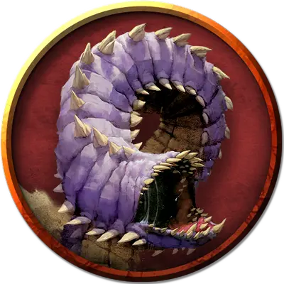

Молодой лиловый червь
Young Purple Worm
Громадный Монстр, без мировоззрения

Класс Доспеха 18 (природный доспех)
Хиты 184 (15к20 + 27)
Скорость 50 футов, копая 30 футов
| мод | спас | ||
|---|---|---|---|
| СИЛ | 28 | +9 | +9 |
| ЛОВ | 7 | −2 | −2 |
| ТЕЛ | 22 | +6 | +11 |
| мод | спас | ||
|---|---|---|---|
| ИНТ | 1 | −5 | −5 |
| МДР | 8 | −1 | +4 |
| ХАР | 4 | −3 | −3 |
Чувства слепое зрение 30 футов, чувство вибрации 60 футов, пассивное Восприятие 9
Опасность 13 (10000 опыта)
Бонус мастерства +5
Особенности
Прокладывание туннеля. Червь может копать сквозь сплошной камень со скоростью копания, уменьшенной вдвое, оставляя за собой туннель диаметром 10 футов.
Действия
Мультиатака. Червь совершает две атаки: одну укусом, и одну жалом.
Укус. Рукопашная атака оружием: +14 к попаданию, досягаемость 10 футов, одна цель. Попадание: Колющий урон 22 (3к8 + 9). Если цель — существо с размером не больше Большого, она должна преуспеть в спасброске Ловкости Сл 19, иначе будет проглочено. Проглоченное существо ослеплено и опутано, у него полное укрытие от атак и прочих эффектов, происходящих извне червя, и оно получает урон кислотой 21 (6к6) в начале каждого хода червя.
Если червь получает 30 или больше урона за один ход от существа, находящегося внутри его, червь должен в конце этого хода преуспеть в спасброске Телосложения Сл 21, иначе он отрыгнет всех проглоченных существ, которые падают ничком в пространстве в пределах 10 футов от червя. Если червь умирает, проглоченное существо перестает быть опутанным им, и может высвободиться из трупа, потратив 20 футов перемещения, падая при выходе ничком.
Жало на хвосте. Рукопашная атака оружием: +14 к попаданию, досягаемость 10 футов, одно существо. Попадание: Колющий урон 19 (3к6 + 9), и цель должна совершить спасбросок Телосложения Сл 19, получая урон ядом 42 (12к6) при провале, или половину этого урона при успехе.
Описание
Массивное роющее чудовище, известное как лиловый червь, терроризирует существ Подземья, прогрызаясь через каменные породы в погоне за добычей. Будучи тупой, хищной силой природы, это существо считает едой все, что видит.
Прожорливые хищники. Громкие звуки привлекают лиловых червей, известных своим вторжением в подземные сражения и проникновением в подземные города в поисках добычи. Подземные цивилизации дроу, дуэргаров и иллитидов поддерживают специальные меры защиты вокруг своих поселений, чтоб защититься от этих чудовищ.
Хотя лиловые черви наиболее распространены в Подземье, они часто встречаются на поверхности в скальных и горных областях. Пасть лилового червя достаточно велика, чтоб проглотить целиком лошадь, и ни одно существо не застраховано от его голода. Червь бросается вперед, ритмично сжимая и расширяя свое тело, заставая врасплох других обитателей Подземья, которые не ожидают от него такой скорости.
Польза червей. Когда лиловый червь прогрызается через землю, он поглощает и тут же выделяет землю и камни, которые только что разрушил. Таким образом, в телах лиловых червей можно найти драгоценные металлы и камни, за которыми и охотятся особо отважные и отчаянные охотники за сокровищами.
Роющий лиловый червь постоянно создает новые туннели через Подземье, которыми другие существа вскоре начинают пользоваться в качестве коридоров и магистралей. Из-за того, что лиловые черви редко возвращаются в свои же туннели, такие проходы — хорошее место, чтоб избежать этих чудовищ. Богатые добычей районы быстро заполняются сложной системой туннелей в результате совместной охоты сразу нескольких червей.